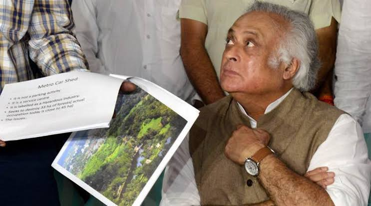

New Delhi: Civil rights activists urged the government on Saturday to restore Articles 370 and 35A of the Constitution and take steps to bring back normalcy in Jammu and Kashmir. Social activist Shabnam Hashmi said the abrogation of Article 370, which gave a special status to ...
AYODHYA: It will take at least five more years and 250 expert artisans.material to make the case that Hindus had launched their struggle for the ‘janmasthan’ in Ayodhya much before the Ram Lalla idol was installed in 1949. Writing a historical sketch of ‘Fyzabad’, as he spelt it Carnegy wrote that, until 1855 “Hindus and Muslims alike used to worship in the mosque-temple.”

Congress leader Jairam Ramesh on Sunday criticised the BJP government’s plan to revise the base year to calculate the gross domestic product growth from the current 2011-12 to 2017-18, saying it was a “terrible” idea.
New Delhi: Civil rights activists urged the government on Saturday to restore Articles 370 and 35A of the Constitution and take steps to bring back normalcy in Jammu and Kashmir. Social activist Shabnam Hashmi said the abrogation of Article 370, which gave a special status to ...